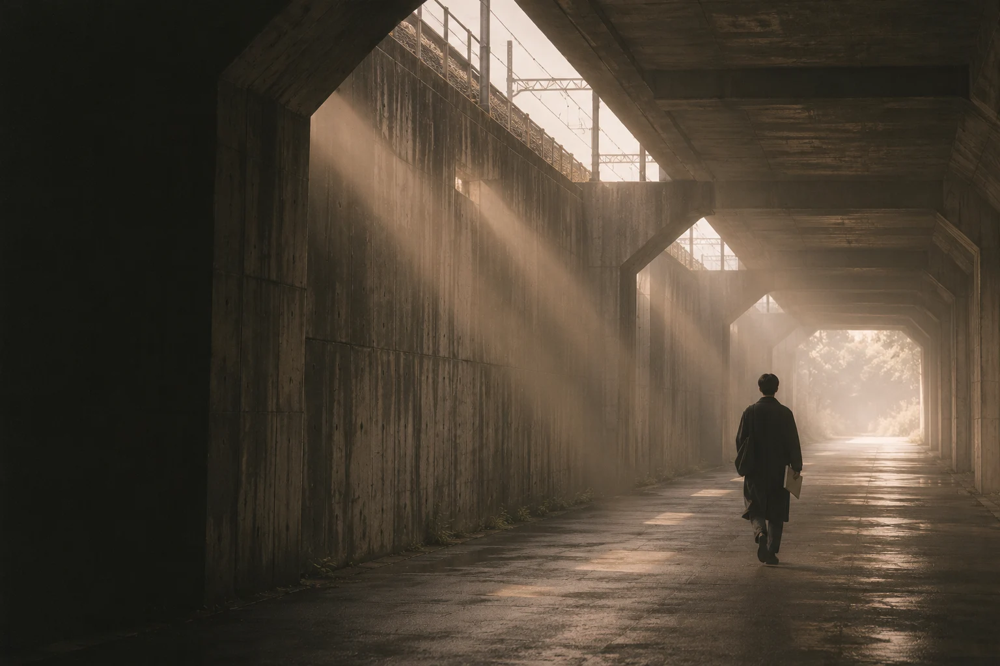

CREATORS
함께 만드는 사람들
음악·출판·영상·디자인 분야의 협업 크리에이터와 전속 크리에이터가 각자의 방식으로 이야기를 작품으로 만듭니다.
크리에이터 운영 방식
크레비안네트워크
Where Stories Become Creations.
이야기와 크리에이터가 만나, 새로운 문화를 만듭니다.
ABOUT KREVIAN
크레비안네트워크(크레비안)는 사람의 이야기와 크리에이터를 연결하는 창작 네트워크입니다. 콘텐츠 제작, 창작자 커뮤니티, 전시 운영과 광고·캠페인 기획을 합니다.
우리의 창작 방식 보기OUR NETWORK
CREATORS
음악·출판·영상·디자인 분야의 협업 크리에이터와 전속 크리에이터가 각자의 방식으로 이야기를 작품으로 만듭니다.
크리에이터 운영 방식COMMUNITY
작업을 나누고 서로의 관점을 발견하는 소모임. 꾸준한 교류가 새로운 팀과 공동 창작의 출발점이 됩니다.
커뮤니티 알아보기PROJECTS
인터뷰와 자체 기획, 외부 제작 의뢰를 크리에이터와 연결합니다. 기획부터 제작·공개·정산까지 함께 살핍니다.
프로젝트 둘러보기SERVICES
이야기 속 감정과 기억을 가사와 선율에 담습니다.
작사 · 작곡 · 음원 제작한 사람의 목소리가 오래 머물 수 있도록 글과 책으로 엮습니다.
인터뷰 원고 · 에세이 · 출판 기획사람과 장소의 표정, 말과 침묵의 리듬을 화면에 담습니다.
인터뷰 영상 · 브랜드 필름 · 다큐멘터리이야기의 분위기와 메시지를 시각 언어로 구현합니다.
비주얼 아이덴티티 · 아트워크 · 편집 디자인음악·출판·영상·디자인을 바탕으로 전시 기획·운영과 광고·캠페인 기획까지 연결합니다.
WORKS
공개가 확정된 완료 작품을 이곳에서 소개합니다.
CREATORS
CONTACT